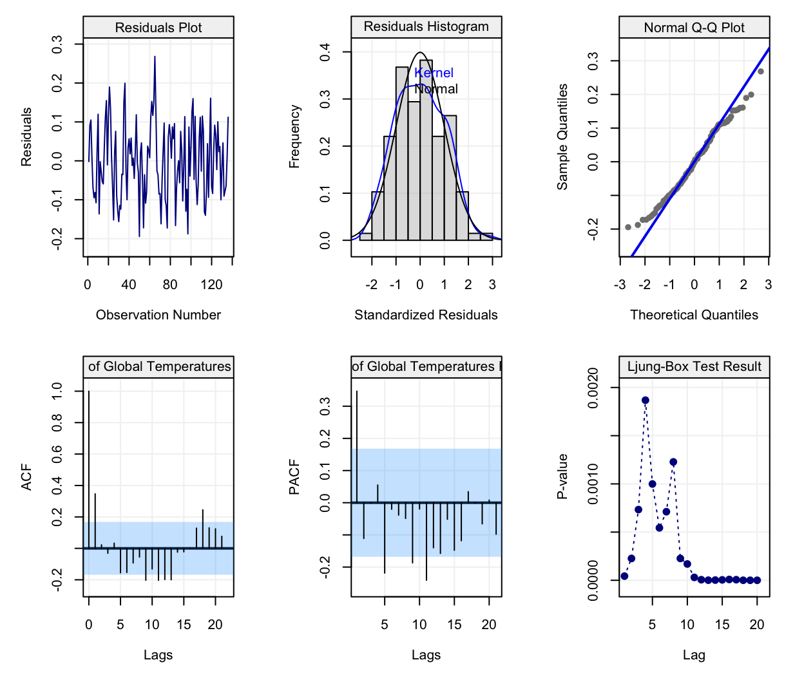
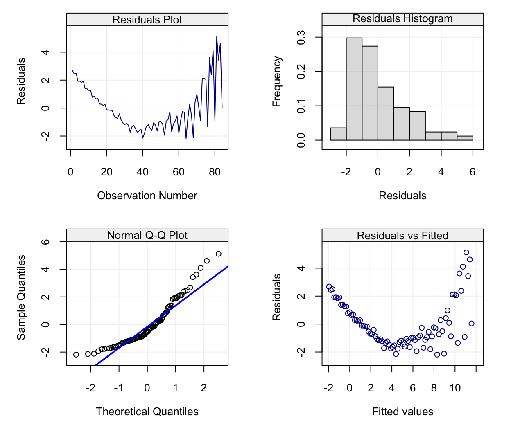
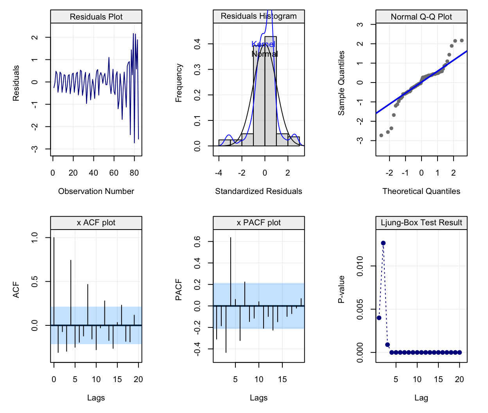
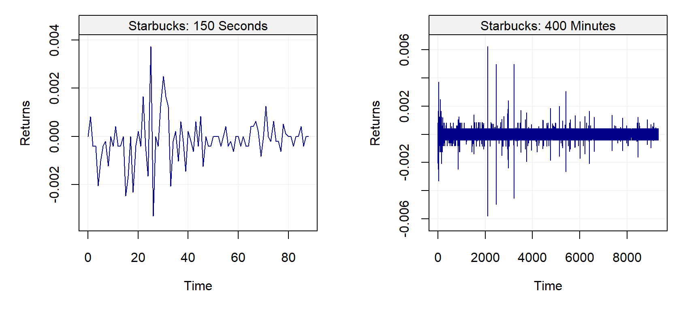
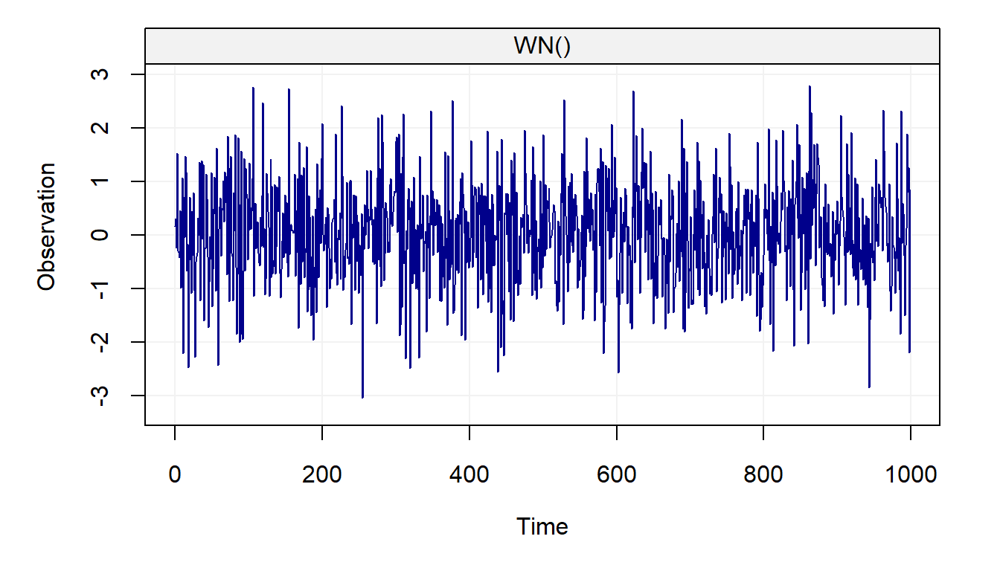
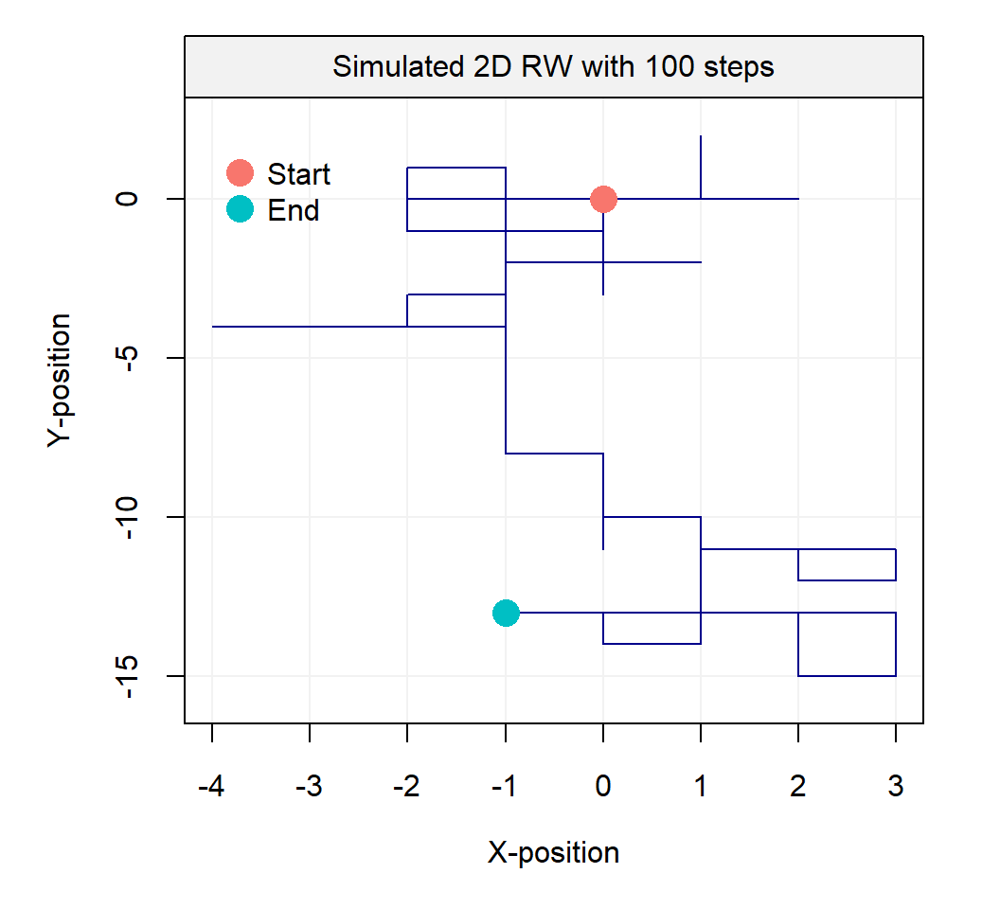
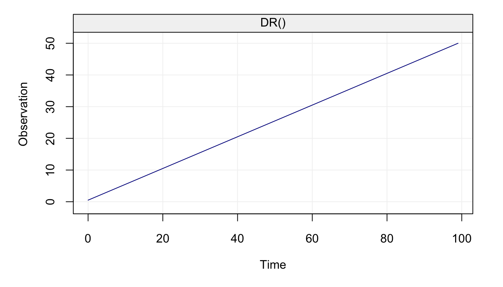
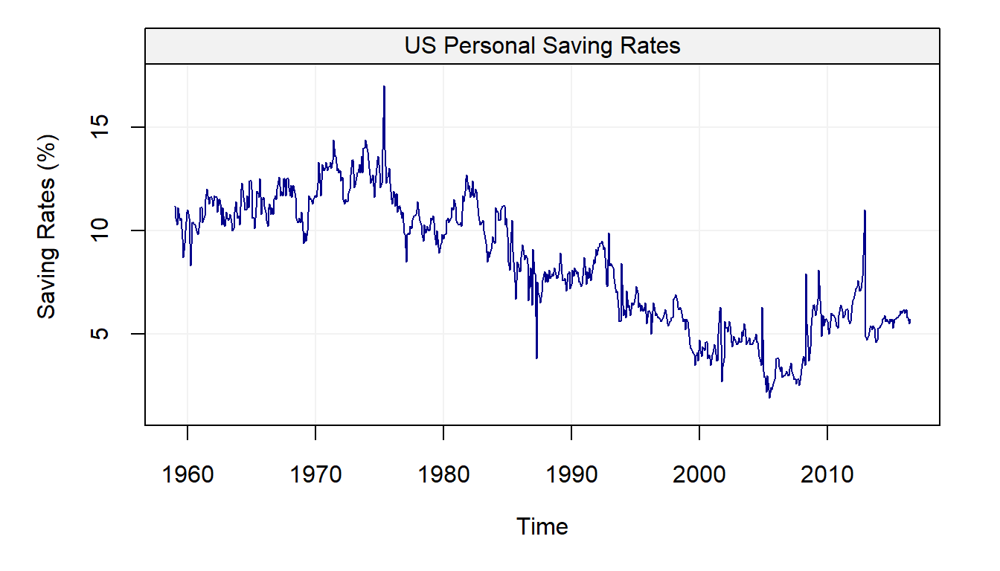

Chapter 2 Basic Elements of Time Series
“Prévoir consiste à projeter dans l’avenir ce qu’on a perçu dans le passé.” – Henri Bergson
To make use of the R code within this chapter you will need to install (if not already done) and load the following libraries:
These libraries can be install as follows:install.packages(c("devtools", "astsa", "mgcv"))
devtools::install_github("SMAC-Group/simts")and simply load them using:
library(astsa)
library(mgcv)
library(simts)We can start the discussion on the basic elements of time series by using a practical example from real data made available through the R software. The data represent the global mean land–ocean temperature shifts from 1880 to 2015 (with base index being the average temperatures from 1951 to 1980) and this time series is represented in the plot below.
# Load data
data(globtemp, package = "astsa")
# Construct gts object
globtemp = gts(globtemp, start = 1880, freq = 1, unit_ts = "C", name_ts = "Global Temperature Deviations", data_name = "Evolution of Global Temperatures")
# Plot time series
plot(globtemp)
These data have been used as a support in favour of the argument that the global temperatures are increasing and that global warming has occured over the last half of the twentieth century. The first approach that one would take is to try and measure the average increase by fitting a model having the form:
\[ X_t = f(t) + \varepsilon_t, \] where \(X_t\) denotes the global temperatures deviation and \(f(\cdot)\) is a “smooth” function such that \(\mathbb{E}[X_t] - f(t) = 0\) for all \(t\). In general, \(\varepsilon_t\) is assumed to follow a normal distribution for simplicity. The goal in this context would therefore be to evaluate if \(f(t)\) (or a suitable estimator of this function) is an increasing function (especially over the last decades). In order to do so, we would require the residuals from the fitted model to be independently and identically distributed (iid). Let us fit a (nonparametric) model with the years (time) as explanatory variable using the code below:
time = gts_time(globtemp)
fit = gam(globtemp ~ s(time))and check the residuals from this model using:
simts::simple_diag_plot(globtemp, fit)
It can be seen from the upper left plot that the trend appears to be removed and, if looking at the residuals as one would usually do in a regression framework, the residual plots seem to suggest that the modelling has done a relatively good job since no particular pattern seems to emerge and their distribution is quite close to being Gaussian.
However, is it possible to conclude from the plots that the data are iid (i.e. independent and identically distributed)? More specifically, can we assume that the residuals are independent? This is a fundamental question in order for inference procedures to be carried out in an appropriate manner and to limit false conclusions. Let us provide an example through a simulated data set where we know that there is an upward trend through time and our goal would be to show that this trend exists. In order to do so we consider a simple model where \(f(t)\) has a simple parametric form, i.e. \(f(t) = \beta \cdot t\) and we employ the following data generating process:
\[X_t = \beta \cdot t + Y_t,\] where \[Y_t = \phi_1 Y_{t-1} + \phi_2 Y_{t-2} + \varepsilon_t,\] and where \(\varepsilon_t \sim \mathcal{N}(0, \sigma^2)\). Intuitively, \(Y_t\) is not an iid sequence of random variables except in the case where \(\phi_1 = \phi_2 = 0\). In the following chapters we shall see that this intuition is correct and that this model is known as an AR(2) model. Considering this, we simulate two cases where, in the first, the residuals are actually iid Gaussian while, in the second, the residuals are Gaussian but are dependent over time. In the first case, the only parameters that explain \(X_t\) are \(\beta = 5 \cdot 10^{-3}\) and \(\sigma^2 = 1\) since the residuals \(Y_t\) are iid (i.e. \(\phi_1 = \phi_2 = 0\)). In the second case however, aside from the mentioned parameters we also have \(\phi_1 = 0.8897\), \(\phi_2 = -0.4858\). In both cases, we perform the hypothesis test:
\[ \begin{aligned} \text{H}_0:& \;\;\; \beta = 0\\ \text{H}_1:& \;\;\; \beta > 0 \end{aligned} \] as our hope is to prove, similarly to the global temperature deviation example, that \(f(t)\) is an increasing function. Our syntetic data are simulated as follows:
# Set seed for reproducibility
set.seed(9)
# Define sample size
n = 100
# Define beta
beta = 0.005
# Define sigma2
sigma2 = 1
# Simulation of Yt
Yt_case1 = gen_gts(WN(sigma2 = sigma2), n = n)
Yt_case2 = gen_gts(AR(phi = c(0.95, -0.5), sigma2 = sigma2), n = n)
# Define explanatory variable (time)
time = 1:n
# Simulation of Xt
Xt_case1 = beta*time + Yt_case1
Xt_case2 = beta*time + Yt_case2
# Fit a linear models
model1 <- lm(Xt_case1 ~ time + 0)
model2 <- lm(Xt_case2 ~ time + 0)The “summary” of our model on the first dataset is given by
summary(model1)##
## Call:
## lm(formula = Xt_case1 ~ time + 0)
##
## Residuals:
## Min 1Q Median 3Q Max
## -2.5985 -0.7023 -0.1398 0.4444 2.7098
##
## Coefficients:
## Estimate Std. Error t value Pr(>|t|)
## time 0.003930 0.001647 2.386 0.019 *
## ---
## Signif. codes: 0 '***' 0.001 '**' 0.01 '*' 0.05 '.' 0.1 ' ' 1
##
## Residual standard error: 0.9583 on 99 degrees of freedom
## Multiple R-squared: 0.05436, Adjusted R-squared: 0.04481
## F-statistic: 5.691 on 1 and 99 DF, p-value: 0.01895As can be seen, in the first case the estimated slope (\(\approx\) 0.004) is close to the true slope (0.005) and is significant (i.e. the p-value is smaller than the common rejection level 0.05) since the p-value of the above mentioned test is given by 0.0095. Hence, from this inference procedure we can conclude at the 5% significance level that the slope is significantly larger than zero and is roughly equal to 0.004 (which is relatively close to the truth). However, let us perform the same analysis when the residuals are not independent (the second case) by examining its “summary”:
summary(model2)##
## Call:
## lm(formula = Xt_case2 ~ time + 0)
##
## Residuals:
## Min 1Q Median 3Q Max
## -3.6916 -1.1184 0.2323 1.1253 2.6198
##
## Coefficients:
## Estimate Std. Error t value Pr(>|t|)
## time 0.0009877 0.0026435 0.374 0.709
##
## Residual standard error: 1.538 on 99 degrees of freedom
## Multiple R-squared: 0.001408, Adjusted R-squared: -0.008679
## F-statistic: 0.1396 on 1 and 99 DF, p-value: 0.7095In this case we can observe that the p-value of the above mentioned test is given by 0.3547 and is therefore greater than the arbitrary value of 0.05. Consequently, we don’t have evidence to conclude that the slope coefficient is larger than zero (i.e. we fail to reject H\(_0\)) although it is actually so in reality. Therefore, the inference procedures can be misleading when not taking into account other possible significant variables or, in this case, forms of dependence that can hide true underlying effects. The above is only one example and there are therefore cases where, despite dependence in the residuals, the estimated slope would be deemed significant even when not considering this dependence structure. However, if we decided to repeat this experiment using a larger quantity of simulated samples, we would probably see that we fail to reject the null hypothesis much more frequently in the case where we don’t consider dependence when there actually is.
These examples therefore highlight how the approach to analysing time series does not only rely on finding an appropriate model that describes the evolution of a variable as a function of time (which is deterministic). Indeed, one of the main focuses of time series analysis consists in modelling the dependence structure that describes how random variables impact each other as a function of time. In other words, a time series is a collection of random variables whose interaction and dependence structure is indexed by time. Based on this structure, one of the main goals of time series analysis is to correctly estimate the dependence mechanism and consequently deliver forecasts that are as accurate as possible considering the deterministic functions of time (and other variables) as well as the random dependence structure.
2.1 The Wold Decomposition
The previous discussion highlighted how a time series can be decomposed into a deterministic component and a random component. Leaving aside technical rigour, this characteristic of time series was put forward in Wold’s Decomposition Theorem who postulated that a time series \((Y_t)\) (where \(t = 1,...,n\) represents the time index) can be very generically represented as follows:
\[Y_t = D_t + W_t,\]
where \(D_t\) represents the deterministic part (or signal) that can be modelled through the standard modelling techniques (e.g. linear regression) and \(W_t\) that, restricting ourselves to a general class of processes, represents the random part (noise) that requires the analytical and modelling approaches that will be tackled in this book.
Typically, we have \(\mathbb{E}[Y_t] \neq 0\) while \(\mathbb{E}[W_t] = 0\) (although we may have \(\mathbb{E}[W_t | W_{t-1}, ..., W_1] \neq 0\)). Such models impose some parametric structure which represents a convenient and flexible way of studying time series as well as a means to evaluate future values of the series through forecasting. As we will see, predicting future values is one of the main aspects of time series analysis. However, making predictions is often a daunting task or as famously stated by Nils Bohr:
“Prediction is very difficult, especially about the future.”
There are plenty of examples of predictions that turned out to be completely erroneous. For example, three days before the 1929 crash, Irving Fisher, Professor of Economics at Yale University, famously predicted:
“Stock prices have reached what looks like a permanently high plateau”.
Another example is given by Thomas Watson, president of IBM, who said in 1943:
“I think there is a world market for maybe five computers.”
Let us now briefly discuss the two components of a time series.
2.1.1 The Deterministic Component (Signal)
Before shifting our focus to the random component of time series, we will first just underline the main features that should be taken into account for the deterministic component. The first feature that should be analysed is the trend that characterises the time series, more specifically the behaviour of the variable of interest as a specific function of time (as the global temperature time series seen earlier). Let us consider another example borrowed from Shumway and Stoffer (2010) of time series based on real data, i.e. the quarterly earnings of Johnson & Johnson between 1960 and 1980 represented below.
# Load data
data(jj, package = "astsa")
# Construct gts object
jj = gts(jj, start = 1960, freq = 4, unit_ts = "$", name_ts = "Quarterly Earnings per Share", data_name = "Johnson & Johnson Quarterly Earnings")
# Plot time series
plot(jj)
As can be seen from the plot, the earnings appear to grow over time, therefore we can imagine fitting a straight line to this data to describe its behaviour by considering the following model:
\[\begin{equation} X_t = \alpha + \beta t + \varepsilon_t, \tag{2.1} \end{equation}\]where \(\varepsilon_t\) is iid Gaussian. The results are presented in the graph below:
# Fit linear regression
time_jj = gts_time(jj)
fit_jj1 = lm(as.vector(jj) ~ time_jj)
# Plot results and add regression line
plot(jj)
lines(time_jj, predict(fit_jj1), col = "red")
legend("bottomright", c("Time series", "Regression line"),
col = c("blue4", "red"), bty = "n", lwd = 1)
Although the line captures a part of the behaviour, it is quite clear that the trend of the time series is not linear as can be observed from the diagnotic plot below:
simple_diag_plot(jj, fit_jj1)
It could therefore be more appropriate to define another function of time to describe it and, consequently, we add a quadratic term of time to obtain the following fit. Therefore, the model considered in (2.1) becomes:
\[\begin{equation} X_t = \alpha + \beta_1 t + \beta_2 t^2 + \varepsilon_t, \tag{2.2} \end{equation}\]The results of this regression are presented on the graphs below:

simple_diag_plot(jj, fit_jj2)
We can see now that the quadratic function of time allows to better fit the observed time series and closely follow the observations. However, there still appears to be a pattern in the data that isn’t captured by this quadratic model. This pattern appears to be repeated over time: peaks and valleys that seem to occur at regular intervals along the time series. This behaviour is known as seasonality which, in this case, can be explained by the effect of a specific quarter on the behaviour of the earnings. Indeed, it is reasonable to assume that the seasons have impacts on different variables measured over time (e.g. temperatures, earnings linked to sales that vary with seasons, etc.). Let us therefore take the quarters as an explanatory variable and add it to the model considered in (2.2), which becomes:
\[\begin{equation} X_t = \alpha + \beta_1 t + \beta_2 t^2 + \sum_{i = 1}^4 \gamma_i I_{t \in \mathcal{A}_i} + \varepsilon_t, \tag{2.3} \end{equation}\]where
\[\begin{equation*} I_{t \in \mathcal{A}} \equiv \left\{ \begin{array}{ll} 1 & \mbox{if } t \in \mathcal{A} \\ 0 & \mbox{if } t \not\in \mathcal{A} \end{array} \right. , \end{equation*}\]and where
\[ \mathcal{A}_i \equiv \left\{x \in \mathbb{N} | x = i \; \text{mod} \; 4\right\}. \]
The results are presented below:

simple_diag_plot(jj, fit_jj3)
This final fit appears to well describe the behaviour of the earnings although there still appears to be a problem of heteroskedasticity (i.e. change in variance) and random seasonality (both of which will be treated further on in this text). Hence, trend and seasonality are the main features that characterize the deterministic component of a time series. However, as discussed earlier, these deterministic components often don’t explain all of the observed time series since there is often a random component characterizing data measured over time. Not considering the latter component can have considerable impacts on the inference procedures (as seen earlier) and it is therefore important to adequately analyse them (see next section).
2.1.2 The Random Component (Noise)
From this section onwards we will refer to time series as being solely the random noise component. Keeping this in mind, a time series is a particular kind of stochastic process which, generally speaking, is a collection of random variables indexed by a set of numbers. Not surprisingly, the index of reference for a time series is given by time and, consequently, a time series is a collection of random variables indexed (or “measured”) over time such as, for example, the daily price of a financial asset or the monthly average temperature in a given location. In terms of notation, a time series is often represented as
\[\left(X_1, X_2, ..., X_T \right) \;\;\; \text{ or } \;\;\; \left(X_t\right)_{t = 1,...,T}.\]
The time index \(t\) is contained within either the set of reals, \(\mathbb{R}\), or integers, \(\mathbb{Z}\). When \(t \in \mathbb{R}\), the time series becomes a continuous-time stochastic process such as a Brownian motion, a model used to represent the random movement of particles within a suspended liquid or gas. However, within this book, we will limit ourselves to the cases where \(t \in \mathbb{Z}\), better known as discrete-time processes. Discrete-time processes are measured sequentially at fixed and equally spaced intervals in time. This implies that we will uphold two general assumptions for the time series considered in this book:
- \(t\) is not random, e.g. the time at which each observation is measured is known, and
- the time between two consecutive observations is constant.
This book will also focus on certain representations of time series based on parametric probabilistic models. For example, one of the fundamental probability models used in time series analysis is called the white noise model and is defined as
\[X_t \mathop \sim \limits^{iid} N(0, \sigma^2).\]
This statement simply means that \((X_t)\) is normally distributed and independent over time. Ideally, this is the type of process that we would want to observe once we have performed a statistical modelling procedure. However, despite it appearing to be an excessively simple model to be considered for time series, it is actually a crucial component to construct a wide range of more complex time series models (see Chapter 3). Indeed, unlike the white noise process, time series are typically not independent over time. For example, if we suppose that the temperature in State College is unusually low on a given day, then it is reasonable to assume that the temperature the day after will also be low.
With this in mind, let us now give a quick overview of the information that can be retrieved on a time series from a simple descriptive representation.
2.2 Exploratory Data Analysis for Time Series
When dealing with relatively small time series (e.g. a few thousands or less), it is often useful to look at a graph of the original data. A graph can be an informative tool for “detecting” some features of a time series such as trends and the presence of outliers. This is indeed what was done in the previous paragraphs when analysing the global temperature data or the Johnson & Johnson data.
To go more in depth with respect to the previous paragraphs, a trend is typically assumed to be present in a time series when the data exhibit some form of long term increase or decrease or combination of increases or decreases. Such trends could be linear or non-linear and represent an important part of the “signal” of a model (as seen for the Johnson & Johnson time series). Here are a few examples of non-linear trends:
Seasonal trends (periodic): These are the cyclical patterns which repeat after a fixed/regular time period. This could be due to business cycles (e.g. bust/recession, recovery).
Non-seasonal trends (periodic): These patterns cannot be associated to seasonal variation and can for example be due to an external variable such as, for example, the impact of economic indicators on stock returns. Note that such trends are often hard to detect based on a graphical analysis of the data.
“Other” trends: These trends have typically no regular patterns and are over a segment of time, known as a “window”, that change the statistical properties of a time series. A common example of such trends is given by the vibrations observed before, during and after an earthquake.
Moreover, when observing “raw” time series data it is also interesting to evaluate if some of the following phenomena occur:
- Change in Mean: Does the mean of the process shift over time?
- Change in Variance: Does the variance of the process evolve with time?
- Change in State: Does the time series appear to change between “states” having distinct statistical properties?
- Outliers Does the time series contain some “extreme” observations? (Note that this is typically difficult to assess visually.)
data(EQ5, package = "astsa")
data(EXP6, package = "astsa")
# Construct gts object
eq5 <- gts(EQ5, start = 0, freq = 1, unit_ts = "p/s", name_ts = "Earthquake Arrival Phases", data_name = "Earthquake Arrival Phases")
exp6 <- gts(EXP6, start = 0, freq = 1, unit_ts = "p/s", name_ts = "Explosion Arrival Phases", data_name = "Explosion Arrival Phases")
# Plot time series
plot(eq5)
plot(exp6)
From the graph, it can be observed that the statistical properties of the time series appear to change over time. For instance, the variance of the time series shifts at around \(t = 1150\) for both series. The shift in variance also opens “windows” where there appear to be distinct states. In the case of the explosion data, this is particularly relevant around \(t = 50, \cdots, 250\) and then again from \(t = 1200, \cdots, 1500\). Even within these windows, there are “spikes” that could be considered as outliers most notably around \(t = 1200\) in the explosion series.
Extreme observations or outliers are commonly observed in real time series data, this is illustrated in the following example.
# Load hydro dataset
data("hydro")
# Simulate based on data
hydro = gts(as.vector(hydro), start = 1907, freq = 12, unit_ts = "in.",
name_ts = "Precipitation", data_name = "Hydrology data")
# Plot hydro
plot(hydro)
We can see how most observations lie below 2mm but there appear to be different observations that go beyond this and appear to be larger than the others. These could be possible outliers that can greatly affect the estimation procedure if not taken adequately into account.
Next, we consider an example coming from high-frequency finance. The figure below presents the returns or price innovations (i.e. the changes in price from one observation to the next) for Starbuck’s stock on July 1, 2011 for about 150 seconds (left panel) and about 400 minutes (right panel).
# Load "high-frequency" Starbucks returns for July 01 2011
data(sbux.xts, package = "highfrequency")
# Plot returns
par(mfrow = c(1,2))
plot(gts(sbux.xts[1:89]),
main = "Starbucks: 150 Seconds",
ylab = "Returns")
plot(gts(sbux.xts),
main = "Starbucks: 400 Minutes",
ylab = "Returns")
It can be observed on the left panel that observations are not equally spaced. Indeed, in high-frequency data the intervals between two points are typically not constant and are, even worse, random variables. This implies that the time when a new observation will be available is in general unknown. On the right panel, one can observe that the variability of the data seems to change during the course of the trading day. Such a phenomenon is well known in the finance community since a lot of variation occurs at the start (and the end) of the day while the middle of the day is associated with small changes. Moreover, clear extreme observations can also be noted in this graph at around 11:00.
Example 2.3 Finally, let us consider the limitations of a direct graphical representation of a time series when the sample size is large. Indeed, due to visual limitations, a direct plotting of the data will probably result in an uninformative aggregation of points between which it is unable to distinguish anything. This is illustrated in the following example.
We consider here the data coming from the calibration procedure of an Inertial Measurement Unit (IMU) which, in general terms, is used to enhance navigation precision or reconstruct three dimensional movements:These sensors are used in a very wide range of applications such as robotics, virtual reality 🐻, vehicle stability control, human and animal motion capture and so forth:
The signals coming from these instruments are measured at high frequencies over a long time and are often characterized by linear trends and numerous underlying stochastic processes.
The code below retrieves some data from an IMU and plots it directly:
# Load IMU data
data(imu6, package = "imudata")
# Construct gst object
Xt = gts(imu6[,1], data_name = "Gyroscope data", unit_time = "hour",
freq = 100*60*60, name_ts = "Angular rate",
unit_ts = bquote(rad^2/s^2))
# Plot time series
plot(Xt)
Although a linear trend and other processes are present in this signal (time series), it is practically impossible to understand or guess anything from the plot. For this reason, other types of representations are available to understand the behaviour of a time series and will be discussed in the next chapter. Having discussed these representations (and the relative issues with these representations) let us present the basic parametric models that are used to build even more complex models to describe and predict the behaviour of a time series.
2.3 Modelling Time Series
Before discussing the basic time series models used to describe and forecast, we briefly discuss the concept of dependence within time series.
2.3.1 Dependence within Time Series
As mentioned earlier, it is straightforward to assume that observations measured through time are dependent on each other (in that observations at time \(t\) have some form of impact on observations at time \(t+1\) or beyond). Due to this characteristic, one of the main interests in time series is prediction where, if \((X_t)_{t=1,\ldots,T}\) is an identically distributed but not independent sequence, we often want to know the value of \({X}_{T+h}\) for \(h > 0\) (i.e. an estimator of \(\mathbb{E}[X_{T+h}| X_T,...]\)). In order to tackle this issue, we first need to understand the dependence between \(X_{1},\ldots,X_{T}\) and, even before this, we have to formally define what independence is.
The basic idea behind the above definitions of independence is the fact that the probability of an event regarding variable \(X_i\) remains unaltered no matter what occurs for variable \(X_j\) (for \(i \neq j\)). However, for time series, this is often not the case and \(X_t\) often has some impact on \(X_{t+h}\) for some \(h\) (not too large). In order to explain (and predict) the impact of an observation on future observations, a series of models have been adopted through the years thereby providing a comprehensive framework to explain dependence through time. The following paragraphs introduce some of these basic models.
2.3.2 Basic Time Series Models
In this section, we introduce some simple time series models that consitute the building blocks for the more complex and flexible classes of time series commonly used in practice. Before doing so it is useful to define \(\Omega_t\) as all the information available up to time \(t-1\), i.e.
\[\Omega_t \equiv \left(X_{t-1}, X_{t-2}, ..., X_0 \right).\]
As we will see further on, this compact notation is quite useful.
2.3.3 White Noise
As we saw earlier, the white noise model is the building block for most time series models and, to better specify the notation used throughout this book, this model is defined as
\[{W_t}\mathop \sim \limits^{iid} N\left( {0,\sigma _w^2} \right).\]
This definition implies that:
- \(\mathbb{E}[W_t | \Omega_t] = 0\) for all \(t\),
- \(\text{cov}\left(W_t, W_{t-h} \right) = \boldsymbol{1}_{h = 0} \; \sigma^2\) for all \(t, h\).
More specifically, \(h \in \mathbb{N}^+\) is the time difference between lagged variables. Therefore, in this process there is an absence of temporal (or serial) correlation and it is homoskedastic (i.e. it has a constant variance). Going into further details, white noise can be categorzied into two sorts of processes: weak and strong. The process \((W_t)\) is a weak white noise if
- \(\mathbb{E}[W_t] = 0\) for all \(t\),
- \(\text{var}\left(W_t\right) = \sigma_w^2\) for all \(t\),
- \(\text{cov} \left(W_t, W_{t-h}\right) = 0\) for all \(t\) and for all \(h \neq 0\).
Note that this definition does not imply that \(W_t\) and \(W_{t-h}\) are independent (for \(h \neq 0\)) but simply uncorrelated. However, the notion of independence is used to define a strong white noise as
- \(\mathbb{E}[W_t] = 0\) and \(\text{var}(W_t) = \sigma^2 < \infty\), for all \(t\),
- \(F(W_t) = F(W_{t-h})\) for all \(t,h\) (where \(F(W_t)\) denotes the marginal distribution of \(W_t\)),
- \(W_t\) and \(W_{t-h}\) are independent for all \(t\) and for all \(h \neq 0\).
It is clear from these definitions that if a process is a strong white noise it is also a weak white noise. However, the converse is not true as shown in the following example:
Example 2.4 Let \(Y_t \mathop \sim F_{t+2}\), where \(F_{t+2}\) denotes a Student distribution with \(t+2\) degrees of freedom. Assuming the sequence \((Y_1, \ldots, Y_n)\) to be independent, we let \(X_t = \sqrt{\frac{t}{t+2}} Y_t\). Then, the process \((X_t)\) is obviously not a strong white noise as the distribution of \(X_t\) changes with \(t\). However this process is a weak white noise since we have:
- \(\mathbb{E}[X_t] = \sqrt{\frac{t}{t+2}} \mathbb{E}[Y_t] = 0\) for all \(t\).
- \(\text{var}(X_t) = \frac{t}{t+2} \text{var}(Y_t) = \frac{t}{t+2} \frac{t+2}{t} = 1\) for all \(t\).
- \(\text{cov}(X_t, X_{t+h}) = 0\) (by independence), for all \(t\), and for all \(h \neq 0\).
This distinction is therefore important and will be extremely relevant when discussing the concept of “stationarity” further on in this book. In general, the white noise model is assumed to be Gaussian in many practical cases and the code below presents an example of how to simulate a Gaussian white noise process.
n = 1000 # process length
sigma2 = 1 # process variance
Xt = gen_gts(n, WN(sigma2 = sigma2))
plot(Xt)
This model can be found in different applied settings and is often accompanied by some of the models presented in the following paragraphs.
2.3.4 Random Walk
The term random walk was first introduced by Karl Pearson in the early nineteen-hundreds and a wide range of random walk models have been defined over the years. For example, one of the simplest forms of a random walk process can be explained as follows: suppose that you are walking on campus and your next step can either be to your left, your right, forward or backward (each with equal probability). Two realizations of such processes are represented below:
set.seed(5)
RW2dimension(steps = 10^2)
RW2dimension(steps = 10^4)
Such processes inspired Karl Pearson’s famous quote that
“the most likely place to find a drunken walker is somewhere near his starting point.”
Empirical evidence of this phenomenon is not too hard to find on a Friday or Saturday night. This two-dimensional process may easily be extended to three dimensions and a simulated example of such a process is presented in the animation below:

In this text, we only consider one very specific form of random walk, namely the Gaussian random walk which can be defined as:
\[X_t = X_{t-1} + W_t,\]
where \(W_t\) is a Gaussian white noise process with initial condition \(X_0 = c\) (typically \(c = 0\).) This process can be expressed differently by backsubstitution as follows:
\[\begin{aligned} {X_t} &= {X_{t - 1}} + {W_t} \\ &= \left( {{X_{t - 2}} + {W_{t - 1}}} \right) + {W_t} \\ &= \vdots \\ {X_t} &= \sum\limits_{i = 1}^t {{W_i}} + X_0 = \sum\limits_{i = 1}^t {{W_i}} + c \\ \end{aligned} \]
A random variable following a random walk can therefore be expressed as the cumulated sum of all the random variables that precede it. The code below presents an example of how to simulate a such process.
n = 1000 # process length
gamma2 = 1 # innovation variance
Xt = gen_gts(n, RW(gamma2 = gamma2))
plot(Xt)
The random walk model is often used to explain phenomena in many different areas one of which is finance where stock prices follow these kind of processes.
2.3.5 First-Order Autoregressive Model
A first-order autoregressive model or AR(1) is a generalization of both the white noise and the random walk processes which are both special cases of an AR(1). A (Gaussian) AR(1) process can be defined as
\[{X_t} = {\phi}{X_{t - 1}} + {W_t},\]
where \(W_t\) is a Gaussian white noise. Clearly, an AR(1) with \(\phi = 0\) is a Gaussian white noise and when \(\phi = 1\) the process becomes a random walk.
Remark 2.1 An AR(1) is in fact a linear combination of past realisations of a white noise \(W_t\) process. Indeed, we have
\[\begin{aligned} {X_t} &= {\phi_t}{X_{t - 1}} + {W_t} = {\phi}\left( {{\phi}{X_{t - 2}} + {W_{t - 1}}} \right) + {W_t} \\ &= \phi^2{X_{t - 2}} + {\phi}{W_{t - 1}} + {W_t} = {\phi^t}{X_0} + \sum\limits_{i = 0}^{t - 1} {\phi^i{W_{t - i}}}. \end{aligned}\]
Under the assumption of infinite past (i.e. \(t \in \mathbb{Z}\)) and \(|\phi| < 1\), we obtain
\[X_t = \sum\limits_{i = 0}^{\infty} {\phi^i {W_{t - i}}},\]
since \(\operatorname{lim}_{i \to \infty} \; {\phi^i}{X_{t-i}} = 0\).From the conclusion of the above the remark, you may have noticed how we assume that the considered time series have zero expectation. The following remark justifies this assumption.
Remark 2.2 We generally assume that an AR(1), as well as other time series models, have zero mean. The reason for this assumption is only to simplfy the notation but it is easy to consider, for example, an AR(1) process around an arbitrary mean \(\mu\), i.e.
\[\left(X_t - \mu\right) = \phi \left(X_{t-1} - \mu \right) + W_t,\]
which is of course equivalent to
\[X_t = \left(1 - \phi \right) \mu + \phi X_{t-1} + W_t.\]
Thus, we will generally only work with zero mean processes since adding means is simple.As for the previously presented models, we provide the code that gives an example of how an AR(1) can be simulated.
n = 1000 # process length
phi = 0.5 # phi parameter
sigma2 = 1 # innovation variance
Xt = gen_gts(n, AR1(phi = phi, sigma2 = sigma2))
plot(Xt)
The AR(1) model is one of the most popular and commonly used models in many practical settings going from biology where it is used to explain the evolution of gene expressions to economics where it is used to model macroeconomic trends.
2.3.6 Moving Average Process of Order 1
As seen in the previous example, an AR(1) can be expressed as a linear combination of all past observations of the white noise process \((W_t)\). In a similar manner we can (in some sense) describe the moving average process of order 1 or MA(1) as a “truncated” version of an AR(1). This model is defined as
\[\begin{equation} X_t = \theta W_{t-1} + W_t, \end{equation}\]where (again) \(W_t\) denotes a Gaussian white noise process. As we will see further on, as for the AR(1) model, this model can also be represented as a linear combination of past observations but it has different characteristics which can capture different types of dynamics in various practical cases.
An example on how to generate an MA(1) is given below:
n = 1000 # process length
sigma2 = 1 # innovation variance
theta = 0.5 # theta parameter
Xt = gen_gts(n, MA1(theta = theta, sigma2 = sigma2))
plot(Xt)
The use of this model is widespread, especially combined with the AR(1) model, and can be found in fields such as engineering where it is often used for signal processing.
2.3.7 Linear Drift
A linear drift is a very simple deterministic time series model which can be expressed as
\[X_t = X_{t-1} + \omega, \]
where \(\omega\) is a constant and with the initial condition \(X_0 = c\), where \(c\) is an arbitrary constant (typically \(c = 0\)). This process can be expressed in a more familiar form as follows:
\[ {X_t} = {X_{t - 1}} + \omega = \left( {{X_{t - 2}} + \omega} \right) + \omega = t{\omega} + c . \]
Therefore, a (linear) drift corresponds to a simple linear model with slope \(\omega\) and intercept \(c\).
Given its simple form, a linear drift can simply be generated using the code below:
n = 100 # process length
omega = 0.5 # slope parameter
Xt = gen_gts(n, DR(omega = omega))
plot(Xt)
This time series model is widely used in different areas of signal analysis where mechanical systems and measuring devices can be characterized by this type of behaviour.
2.4 Composite Stochastic Processes
In the previous paragraphs we defined and briefly discussed the basic time series models that can individually be used to describe and predict a wide range of phenomena in a variety of fields of application. However, their capability of capturing and explaining the different behaviours of phenomena through time increases considerably when they are combined to form so-called composite models (or composite processes). A composite (stochastic) process can be defined as the sum of underlying (or latent) time series models and in the rest of this book we will use the term latent time series models to refer to these kinds of models. A simple example of such a model is given by
\[\begin{aligned} Y_t &= Y_{t-1} + W_t + \delta\\ X_t &= Y_t + Z_t, \end{aligned}\]
where \(W_t\) and \(Z_t\) are two independent Gaussian white noise processes. This model is often used as a first basis to approximate the number of individuals in the context ecological population dynamics. For example, suppose we want to study the population of Chamois in the Swiss Alps. Let \(Y_t\) denote the “true” number of individuals in this population at time \(t\). It is reasonable to assume that the number of individuals at time \(t\) (\(Y_t\)) is (approximately) the population at the previous time \(t-1\) (e.g the previous year) plus a random variation and a drift. This random variation is due to the natural randomness in ecological population dynamics and reflects changes such as the number of predators, the abundance of food, or weather conditions. On the other hand, ecological drift is often of particular interest for ecologists as it can be used to determine the “long” term trends of the population (e.g. if the population is increasing, decreasing, or stable). Of course, \(Y_t\) (the number of individauls) is typically unknown and we observe a noisy version of it, denoted as \(X_t\). This process corresponds to the true population plus a measurement error since some individuals may not be observed while others may have been counted several times. Interestingly, this process can clearly be expressed as a latent time series model (or composite stochastic process) as follows:
\[\begin{aligned} R_t &= R_{t-1} + W_t \\ S_t &= \delta t \\ X_t &= R_t + S_t + Z_t, \end{aligned}\]
where \(R_t\), \(S_t\) and \(Z_t\) denote, respectively, a random walk, a drift, and a white noise. The code below can be used to simulate such data:
n = 1000 # process length
delta = 0.005 # delta parameter (drift)
sigma2 = 10 # variance parameter (white noise)
gamma2 = 0.1 # innovation variance (random walk)
model = WN(sigma2 = sigma2) + RW(gamma2 = gamma2) + DR(omega = delta)
#Xt = gen_lts(n = n, model = model)
#plot(Xt)In the above graph, the first three plots represent the latent (unobserved) processes (i.e. white noise, random walk, and drift) and the last one represents the sum of the three (i.e. \((X_t)\)).
Let us consider a real example where these latent processes are useful to describe (and predict) the behavior of economic variables such as Personal Saving Rates (PSR). A process that is used for these settings is the “random-walk-plus-noise” model, meaning that the data can be explained by a random walk process in addition to which we observe some other process (e.g. a white noise model, an autoregressive model such as an AR(1), etc.). The PSR taken from the Federal Reserve of St. Louis from January 1, 1959, to May 1, 2015, is presented in the following plot:
# Load savingrt dataset
data("savingrt")
# Simulate based on data
savingrt = gts(as.vector(savingrt), start = 1959, freq = 12, unit_ts = "%",
name_ts = "Saving Rates", data_name = "US Personal Saving Rates")
# Plot savingrt simulation
plot(savingrt)
It can be observed that the mean of this process seems to vary over time, suggesting that a random walk can indeed be considered as a possible model to explain this data. In addition, aside from some “spikes” and occasional sudden changes, the observations appear to gradually change from one time point to the other, suggesting that some other form of dependence between them could exist.
References
Shumway, R.H., and D.S. Stoffer. 2010. Time Series Analysis and Its Applications: With R Examples. Springer Texts in Statistics. Springer New York. https://books.google.com/books?id=NIhXa6UeF2cC.